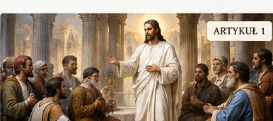
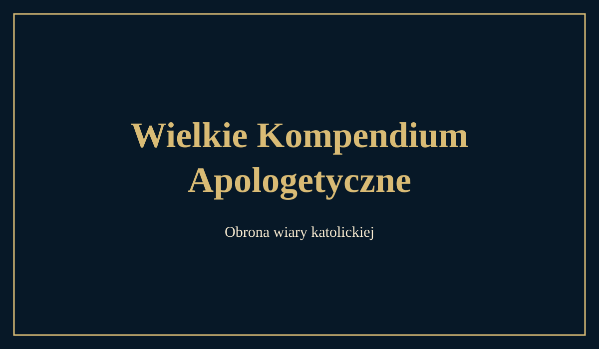

📖
Pismo Święte
Słowo Boże i podstawowe teksty biblijne dotyczące nauki katolickiej.
Czytaj więcej →Prawda · Tradycja · Wiara
Obrona i wyjaśnianie wiary katolickiej w oparciu o Pismo Święte, Świętą Tradycję i autentyczne Magisterium Kościoła.
Kalendarz oparty na układzie rzymskim Divino Afflatu – 1954, czyli stanie sprzed reformy z 1955 r. Sekcja zmienia się automatycznie każdego dnia.
Słowo Boże i podstawowe teksty biblijne dotyczące nauki katolickiej.
Czytaj więcej →Nauka Apostołów przekazywana w Kościele przez kolejne pokolenia.
Czytaj więcej →Dokumenty papieskie, sobory, katechizmy i oficjalne nauczanie Kościoła.
Czytaj więcej →
List 59, List 48 i List 68 oraz spór ze Stefanem I.
Czytaj artykuł →
Arka Nowego Przymierza, typologia biblijna i świadectwo Ojców Kościoła.
Czytaj artykuł →
O Boskim ustanowieniu, znamionach prawdy i Mistycznym Ciele Chrystusa.
Przeczytaj →


Prymat Piotra, Rzym, jedność Kościoła, Filioque i zagadnienia eklezjologiczne.
Przejdź do działu →Materiały apologetyczne dotyczące protestantyzmu, nauki o Maryi i różnic doktrynalnych.
Przejdź do działu →Odpowiedzi apologetyczne dotyczące istnienia Boga, rozumu i wiary.
Przejdź do działu →Materiały dotyczące poznawalności Boga i racjonalnych podstaw wiary.
Przejdź do działu →Kościół jako Mistyczne Ciało Chrystusa, jego znamiona i posłannictwo.
Czytaj →Świadectwa Ojców dotyczące wiary, Tradycji i nauki Kościoła.
Czytaj →Rzeczowe odpowiedzi oparte na Piśmie Świętym, Tradycji i Magisterium.
Czytaj →Odkrywaj wiarę katolicką poprzez Pismo Święte, Tradycję, świadectwo Ojców Kościoła i dokumenty Magisterium.
☕ Wesprzyj autora